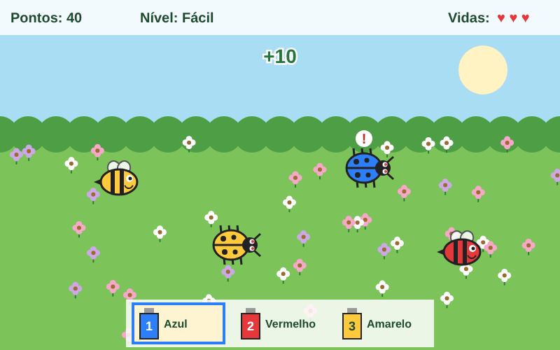

Let It Bee! 🐝
Um jardim precisa de proteção. Mas cuidado com quem você escolhe atingir!
Apresentação do jogo
Let It Bee! é um jogo de ação, atenção e reflexos desenvolvido com HTML, CSS, JavaScript e Canvas.
O jogador assume a responsabilidade de proteger um jardim contra insetos invasores que prejudicam as plantas. Para isso, precisa usar inseticidas de cores diferentes, eliminando os invasores sem atingir as abelhas, que são importantes para a polinização e a preservação do jardim.
O principal desafio é identificar rapidamente cada personagem, distinguir as abelhas dos insetos invasores e selecionar o inseticida correspondente à cor do invasor.

Objetivo
Eliminar o maior número possível de insetos invasores, proteger as abelhas e manter-se no jogo pelo maior tempo possível.
O jogador começa com três vidas. Cada erro ou invasor que escapar resulta na perda de uma vida. Conforme as vidas diminuem, a dificuldade aumenta.
Personagens
O jogo tem seis personagens, divididos em duas categorias:
| Categoria | Personagens | Aparência | O que fazer |
|---|---|---|---|
| Abelhas | Abelha azul, abelha vermelha e abelha amarela | Corpo listrado, asas brancas e sorriso | Proteger (deixar passar) |
| Insetos invasores | Inseto azul, inseto vermelho e inseto amarelo | Casco com manchas, cabeça preta e patas | Eliminar |
Regra importante: a cor determina o inseticida, e o tipo do personagem determina se ele deve ser eliminado ou protegido.
Inseticidas e comandos
O jogador usa o teclado para escolher o inseticida e o mouse para atingir o personagem.
| Tecla | Inseticida | Elimina |
|---|---|---|
| 1 | Azul | Insetos azuis |
| 2 | Vermelho | Insetos vermelhos |
| 3 | Amarelo | Insetos amarelos |
Mouse: clique sobre o personagem para disparar o inseticida selecionado.
Os três inseticidas ficam sempre visíveis na barra de baixo do jogo, e o selecionado fica destacado. Também dá para clicar em uma lata para escolher a cor.
Exemplo: se aparecer um inseto azul, aperte 1 e clique sobre ele. Se aparecer uma abelha azul, deixe-a passar.
Movimentação dos personagens
- Os personagens passeiam pelo jardim.
- Eles aparecem e desaparecem em diferentes momentos.
- Podem surgir em diferentes posições da tela.
- Até quatro personagens podem estar na tela ao mesmo tempo.
- A aparição é imprevisível: você nunca sabe quem vem em seguida.
Pontuação, vidas e penalidades
| Ação | Resultado |
|---|---|
| Eliminar inseto com a cor correta | +10 pontos (ele desaparece na hora) |
| Atingir inseto com a cor errada | -1 vida |
| Atingir uma abelha | -1 vida |
| Deixar um inseto escapar | -1 vida |
| Clicar em um espaço vazio | Sem penalidade |
Progressão da dificuldade
| Vidas | Nível | Como fica o jogo |
|---|---|---|
| 3 | Fácil | Personagens mais lentos e aparições menos frequentes |
| 2 | Médio | Personagens mais rápidos e aparições mais frequentes |
| 1 | Difícil | Maior velocidade e aparições mais imprevisíveis |
| 0 | Fim de jogo | O jogo termina e mostra a pontuação final |
Os acertos também deixam o jogo mais difícil:
| Pontos | O que muda |
|---|---|
| 50 pontos ★ | Personagens 25% mais rápidos e aparecendo com mais frequência |
| 100 pontos ★★ | Personagens 50% mais rápidos e aparecendo com ainda mais frequência |